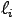
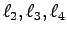
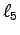
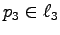
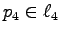
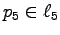
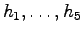

are the lines supporting the edges of a
convex pentagon and
,
for each
are the lines supporting the edges of a
convex pentagon and
,
for each  from 1 to 5
are points in the interior of
the corresponding edge.
from 1 to 5
are points in the interior of
the corresponding edge.
Enumerative geometry is the art of counting geometric figures satisfying conditions imposed by other, fixed, geometric figures. For example, in 1848, Steiner [5] asked how many plane conics are tangent to five given conics? His answer, 65=7776, turned out to be incorrect, and in 1864 Chasles [1] gave the correct answer of 3264. These methods were later systematized and used to great effect by Schubert [4], who codified the field of enumerative geometry.
This classical work always concerned complex figures. It was only in 1984 that the question of reality was posed by Fulton [2, p. 55]: ``The question of how many solutions of real equations can be real is still very much open, particularly for enumerative problems.'' He goes on to ask: ``For example, how many of the 3264 conics tangent to five general conics can be real?'' He later determined that all can be real, but did not publish that result. Ronga, Tognoli, and Vust [3] later gave a careful argument that all 3264 can be real.
The basic idea of the arguments of Fulton and of Ronga, Tognoli, and Vust is to deform the
same special configuration.
We will sketch the idea in Fulton's construction.
Suppose that
are the lines supporting the edges of a
convex pentagon and
,
for each from 1 to 5
are points in the interior of
the corresponding edge.
For every subset S of the lines, there are 2min{|S|, 5-|S|} conics that are tangent to the lines in S and that meet the 5-|S | points not on the lines in S. This is the number of complex conics, and it does not depend upon the configuration of (generic) points and lines. However, when the points and lines are chosen in convex position, then all such conics will be real. Altogether, this gives
from 1 to 5 either meet
or are tangent to :
The idea now is to replace each pair
lying on by a
hyperbola that is close to the pair
,
in that it is close to its asymptotes, which are two lines close to
that meet at
.
Then, for every conic in our configuration, there will be two nearby conics tangent to
.
To see this, suppose that =1.
Then the set C of conics which satisfy one of the conditions ``meet
'' or
``tangent to ''
for each = 2,3,4,5 will form an irreducible
curve C.
For each conic in C that meets ,
there will be two nearby conics in C tangent to
near
, and for each conic in
C tangent to , there will be two nearby
conics in C tangent to each of the two nearby branches of
.
We ilustrate this when C is the curve of conics tangent to
, and
, showing the conics in C,
For our configuration of 102 conics, the hyperbola
=2,3,4,5 either contain
or are tangent to .
If we now replace by a similar nearby hyperbola, then the 204 conics become 408. Replacing  by a nearby hyperbola, give 816 conics. Continuing with  gives 1632, and finally replacing  with a hyperboloa gives five hyperbolae,  for which there are 3264 = (25 102) real conics tangent to each . In this way, the classical problem of 3264 conics can have all of its solutions be real.
| 1 | M. Chasles, Construction des coniques qui satisfont à cinque conditions, C. R. Acad. Sci. Paris 58 (1864), 297-308. | |
| 2 | Wm. Fulton, Introduction to intersection theory in algebraic geometry, CBMS 54, AMS, 1996, second edition. | |
| 3 | F. Ronga, A. Tognoli, and Th. Vust, The number of conics tangent to 5 given conics: the real case, Rev. Mat. Univ. Complut. Madrid 10 (1997), 391-421. | |
| 4 | H. Schubert, Kalkul der abzählenden Geometrie, Springer-Verlag, 1879, reprinted with an introduction by S. Kleiman, 1979. | |
| 5 | J. Steiner, Elementare Lösung einer geometrischen Aufgabe, und über einige damit in Beziehung stehende Eigenschaften der Kegelschnitte, J. Reine Angew. Math. 37 (1848), 161-192. |